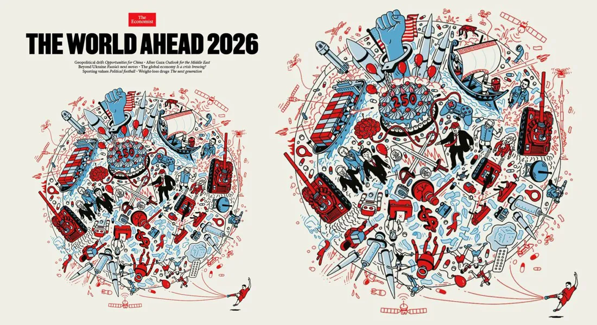

O Mundo à Frente 2026
Introdução
Com base na análise do vídeo de Karina Michelin sobre a capa da The Economist para 2026, preparei um artigo estruturado que sintetiza as interpretações filosóficas e geopolíticas apresentadas.
O Oráculo de 2026: Uma Análise da Geopolítica e do Biopoder
A capa da revista The Economist é historicamente aguardada como um mapa das intenções das elites globais. Para 2026, a publicação "The World Ahead" apresenta uma iconografia densa que, sob a lente de teóricos como Foucault, Gramsci e Debord, sugere uma transição profunda na governança mundial: a passagem da democracia liberal para um tecnopoder global.
1. A Biopolítica e o Controle do Metabolismo Humano
Um dos pontos centrais da análise é a presença de seringas, pílulas e conexões neurais. Utilizando o conceito de Biopoder de Michel Foucault, o artigo destaca que o poder moderno não busca apenas punir, mas administrar a vida em detalhes. • Medicalização da existência: O uso de fármacos para controle de comportamento, humor e estética (como drogas de perda de peso) torna-se uma ferramenta de otimização social. • Transumanismo regulado: A fusão entre corpo e tecnologia transforma a biologia humana em infraestrutura econômica, onde quem não se adapta aos padrões de performance digital e biológica corre o risco de ser marginalizado.
2. O Novo Bloco Histórico e a Hegemonia Pós-Nacional
A análise recorre a Antonio Gramsci para explicar o "Novo Príncipe Moderno". Este não é mais um líder único, mas um tripé de forças que molda o consenso global:
- Big Techs: Controladoras da informação e da subjetividade.
- Complexo Biomédico: Gestor dos corpos e emoções.
- Aparato Militar-Financeiro: Garantidor da coerção e da moeda. A celebração dos 250 anos dos Estados Unidos, representada por um punho azul saindo de um bolo, simboliza uma tentativa de renovação da força americana, ainda que em um cenário de decadência e reorganização do tabuleiro por outras potências.
3. A Guerra Civil Global e o Estado de Exceção
Inspirado em Carl Schmitt, o artigo aponta que o conflito em 2026 ultrapassa o campo militar para se tornar ontológico. O mundo divide-se entre o modelo liberal digitalizado do Ocidente e potências soberanas (como China e Rússia) que rejeitam essa universalização. • Dissidência informacional: O inimigo passa a ser aquele que resiste à narrativa oficial. A luta pela definição do que é "verdade" ou "ciência" cria um estado de exceção planetário mascarado de normalidade institucional.
4. A Sociedade do Espetáculo e o Ópio Digital
O futebol e a Copa do Mundo de 2026 aparecem como a metáfora perfeita da "Sociedade do Espetáculo" de Guy Debord. O mundo é transformado em jogo e a política em performance. Enquanto as massas se distraem com a meritocracia ilusória do esporte e o consumo de experiências digitais, as elites movem as peças invisíveis do tabuleiro econômico.
Conclusão: O Caos como Método de Governo
O artigo conclui que o caos visual da capa não representa desordem, mas sim uma ordem estratégica. A instabilidade permanente e as crises sucessivas são ferramentas para gerar medo e, consequentemente, obediência. Em 2026, o controle não será exercido por ideologias tradicionais, mas por algoritmos, farmacologia e a promessa de proteção. Como vaticinou Foucault: "O poder vence quando convence você de que ele é proteção."
Assista ao vídeo completo no canal da Karina Michelin

👉 ...
- Essencialista